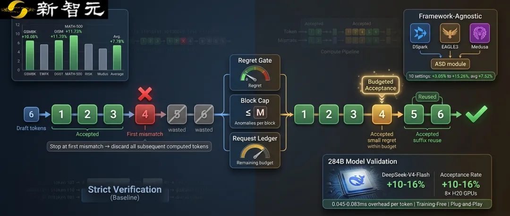
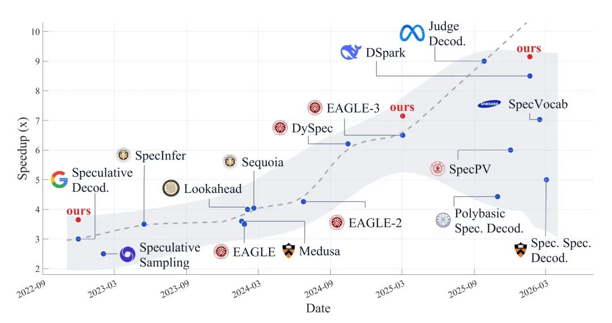
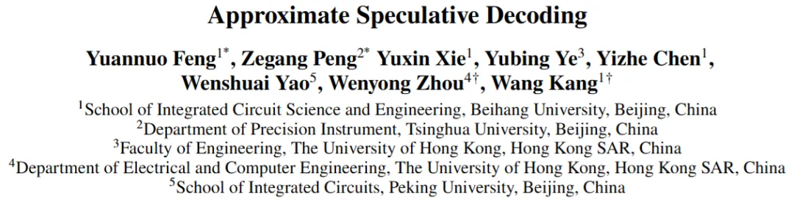
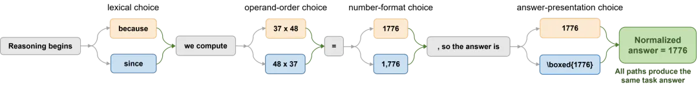
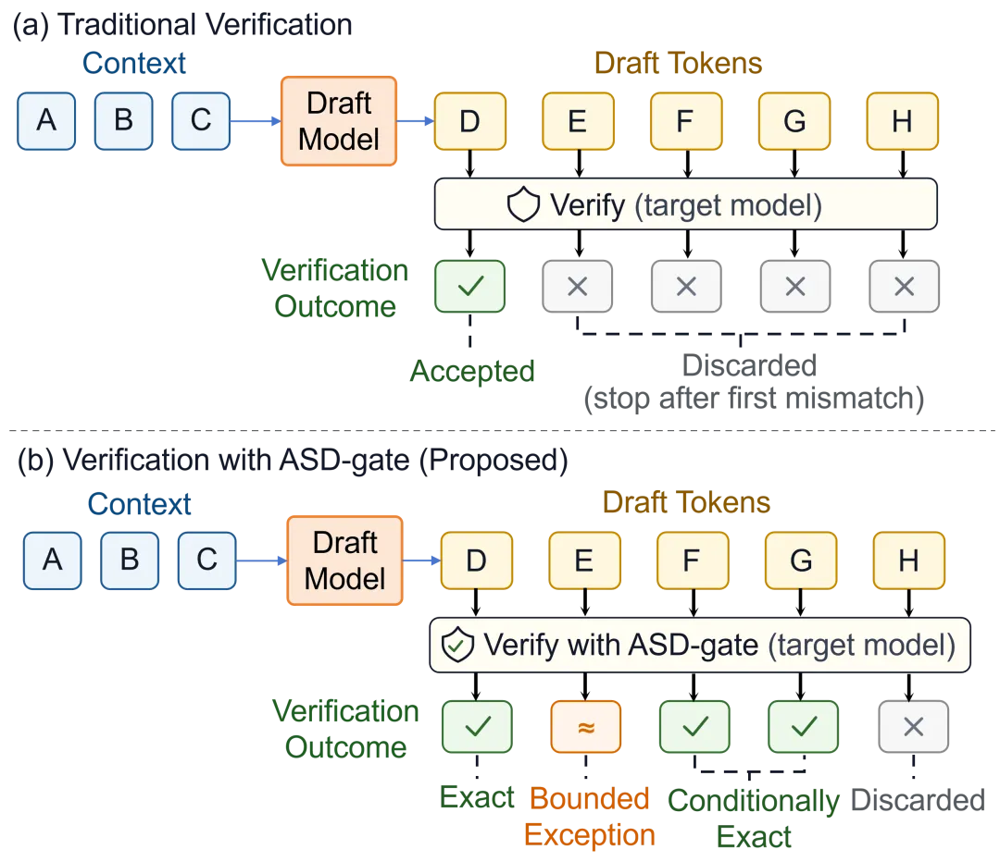
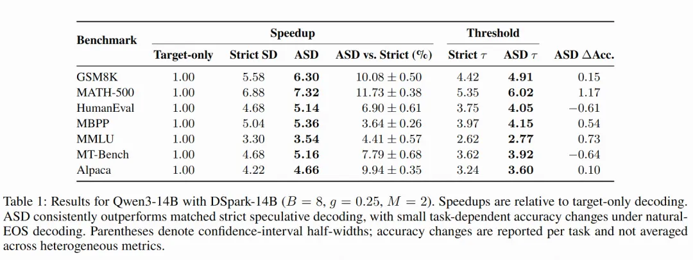
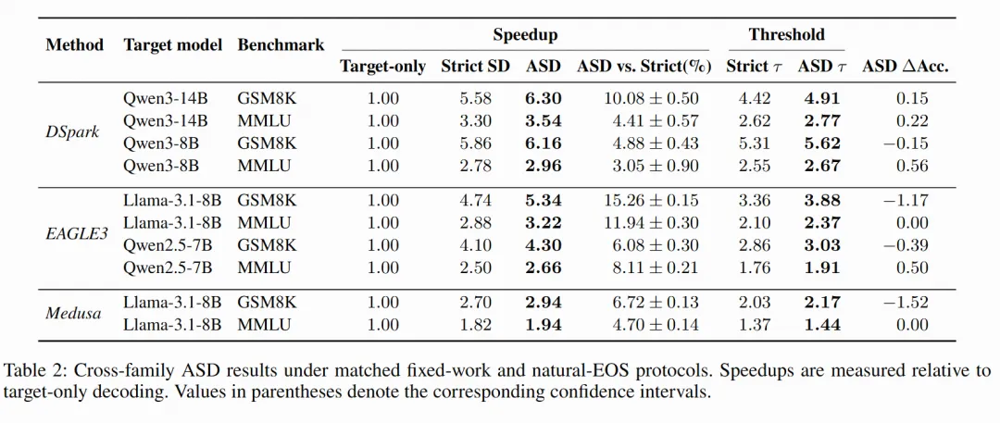
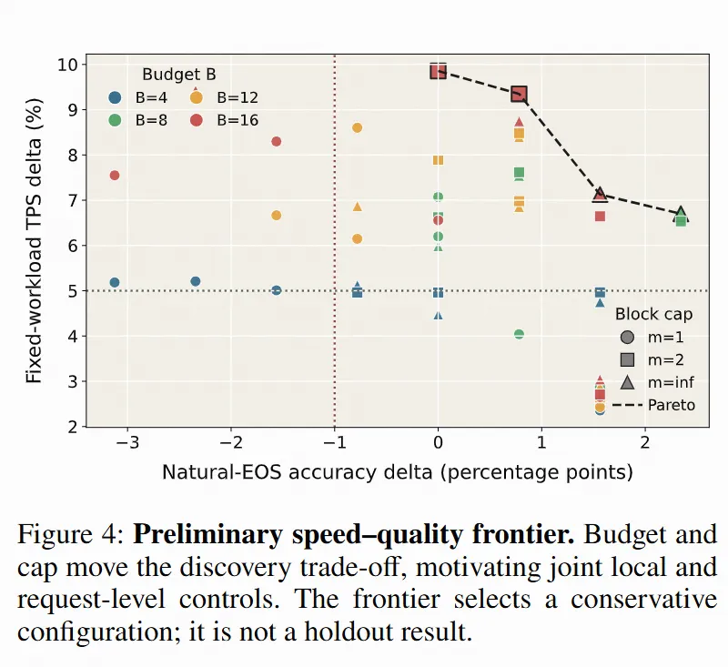

新智元报道
新智元报道

大语言模型「逐字蹦」式的自回归生成，是推理慢、成本高的核心瓶颈。投机解码（Speculative Decoding）让一个轻量「草稿模型」先猜好一整块字、再由大模型一次并行「批改」，是近年最主流的免费提速思路之一，已被vLLM等主流框架广泛采用。

但它有一条「严格」的批改规则：草稿只要在第一个字上和大模型的最优选择不一致，验证立即停止，后面的草稿全部作废，哪怕大模型其实已经把这一整段都批改完了。
北京航空航天大学、清华大学、香港大学、北京大学联合团队提出的近似投机解码（Approximate Speculative Decoding，ASD），给这条规则「松了绑」：在严格可控的预算内，有选择地接受极少数「大模型本来也几乎想选」的分歧字，并把后面仍然正确、且已经算好的内容捡回来接着用。

论文链接： https://arxiv.org/abs/2608.03447
开源代码： https://github.com/Kissmetothemoon/ASD
几个关键数字：
在Qwen3-14B + DSpark-14B的 7 个任务上，固定负载吞吐平均提升7.78%（区间3.64%–11.73%），平均每轮接受token 数从 3.85 提升到 4.20；
在DSpark / EAGLE3 / Medusa三种草稿框架、共10组设置中全部取得正增益（3.05%–15.26%，平均 7.52%），最高提速15.26%；
在284B参数的超大模型DeepSeek-V4-Flash上（8 张 H20 GPU），验证端接受率提升约10%–16%；
验证器新增逻辑每个输出token仅0.045–0.083毫秒，且无需训练、无需微调、无需额外跑一次大模型；预算设为零时，严格退回标准投机解码；
更关键的是，ASD是一个即插即用的验证器模块：不改动草稿模型与原有流程，在DSpark、EAGLE3、Medusa等多种主流投机解码算法上均实现了正向提速。

大语言模型是逐字（token）自回归生成的：每输出一个字，都要把动辄数百、上千亿参数的大模型完整跑一遍。生成一篇上千字的回答，意味着成百上千次串行的大模型前向计算。
投机解码的做法是：让一个轻量的「草稿模型」（drafter）一次性猜好后面的几个字，再由大模型（target）在一次前向中并行「批改」。猜对的字直接采纳，猜错的位置则丢弃草稿、由大模型重新生成。在严格的理论保证下，这种方法可以做到与大模型单独生成完全一致的输出，因此被广泛采用。
但传统的「批改规则」存在一个固有浪费。标准贪心验证采用二元判断：草稿只要在第一个字上与大模型的最优选择（argmax）不一致，验证就立即停止，后面的草稿全部作废。
可问题在于,在这一轮并行验证中，大模型其实已经把这一整段草稿每个位置的分数（logits）都算出来了。这些已经付出的计算，随着第一个分歧的出现被白白丢弃。
更微妙的是：大模型给后面位置打分时，本就是「假设前面草稿都成立」来逐行计算的。也就是说，如果我们愿意接受前面那一处小分歧，后面紧跟着的一长串字，很可能恰好仍是大模型的最优选择：
它们本来就已经被算对了。
研究团队注意到一个常被忽视的事实：草稿与大模型在某个字上「不一致」，并不等于最终答案出错。
论文举了很直观的例子：同一个数学结果，可以写成 1776、1,776 或带方框的 \boxed{1776}；37×48与48×37交换了顺序；推理中「因为……所以……」换成「由于……因此……」，字面上明明不一样，最终答案却完全相同。也就是说，token 级别的分歧只是任务质量的一个「不完美代理信号」，而非错误本身。
当然，团队也特别强调：接受一个非贪心的字会改变解码轨迹，这并非无损优化。真正的难题不是「无视分歧」，而是
单纯地在每一块草稿里各自放宽，会让偏差在多轮解码中反复叠加；而每块都重置「容错额度」，又无法对同一段生成中已经引入的偏差负责。这正是 ASD 要解决的问题。

ASD 的核心思想是：与其在第一个分歧处「一刀切」，不如在严格可控的预算内，有选择地接受极少数「大模型本来也几乎想选」的分歧字，随后直接复用其后仍与大模型贪心选择一致的连续后缀，这部分字无需再做任何近似决策，也无需额外跑一次大模型前向。
当一个草稿字与大模型选择不一致时，ASD 会先计算这个分歧的「遗憾值」（regret）：即大模型最优选择与草稿选择之间的概率差。遗憾值越小，说明这个字越「几乎打平」、越无伤大雅。为防止「放水」演变成质量滑坡，ASD设置了三道闸门：
局部「遗憾」门控（regret gate）：单个分歧的遗憾值必须足够小，且要和「它后面还能挽救多少字」相称，太不划算就拒绝；
每块异常次数上限（block cap）：一个草稿块内最多允许几处分歧，避免单块内密集放水；
贯穿整个请求的「遗憾预算账本」（request-level ledger）：整段生成中累计接受的偏差总量被约束在固定预算内，绝不让误差随输出长度累积。
三者共同作用，使近似被显式量化、可审计。
ASD 的另一项关键设计是「已实现前缀后缀复用」：接受一个分歧字后，后续草稿字是在「包含该分歧的新前缀」下被大模型重新打分的，其中一段连续后缀往往恰好仍是大模型的贪心选择。这段后缀可以直接提交，既不需要额外的大模型前向，也不需要再做新的近似决策，这正是提速的主要来源。
工程上，ASD 是一个独立、即插即用的验证器模块：它不重写草稿模型、也不改变投机解码的整体流程，只是把标准验证中「首个分歧即截断」的那一步，替换成「预算化的最长前缀选择」，插入现有流水线即可工作。
免训练、免微调、免换草稿模型，也不需要额外的大模型前向计算（新增算术复杂度仅 O(K)）；
框架无关、广泛兼容：无论上层用的是 DSpark、EAGLE3 还是 Medusa 等哪种投机解码算法，ASD 都作用在「大模型打完分之后」的同一环节，因此可以直接挂载、即插即用；
预算设为零 = 原样：B=0 时严格退化为标准贪心验证，与现有系统完全兼容，随时可以切回。

团队用两个问题系统验证了方法的有效性。
问题一：只放行「预算内允许」的分歧，能否真的提升端到端吞吐？
在 Qwen3-14B 搭配 DSpark-14B、覆盖 GSM8K、MATH-500、HumanEval、MBPP、MMLU、MT-Bench、Alpaca 七个任务的评测中，ASD 的固定负载吞吐较严格投机解码全部提升，幅度 3.64%–11.73%（平均 7.78%）。下表加速比均以「仅用大模型、不做投机解码」为 1.00 基准：

提速最明显的是数学类任务 MATH-500（+11.73%）和 GSM8K（+10.08%），平均每轮接受长度也分别增加 0.67 和 0.49 个 token，这正是「接受一处低遗憾分歧、解锁一段已算好后缀」的典型特征。
在自然结束解码（按真实停词结束）的质量审计中，七个任务有五个准确率不降，仅 HumanEval（约 -0.61 分）、MT-Bench（约 -0.64 分）出现约 0.6 个百分点的微小波动。
问题二：作为一个通用模块，ASD 换个投机解码算法还成立吗？
为证明收益来自验证端模块本身、而不绑定某一款草稿算法，团队把同一个ASD验证器直接挂载到 DSpark、EAGLE3、Medusa 三种不同的投机解码算法上，在 Qwen3 / Llama-3.1 / Qwen2.5 等多类目标模型上做了交叉验证，10 组设置全部取得正增益：

10组提升区间3.05%–15.26%（平均7.52%），每个 95% 置信区间都严格大于零，且每组的平均接受长度都在增加：同一个验证器模块，挂到哪种投机解码算法上都能带来正向提速，这说明提速来自验证端机制本身，而非某种特定草稿的改动。这些增益还是在严格基线已达 1.82×–6.88× 加速的基础上「再加一层」，ASD 将上限进一步推到1.94×–7.32×。
消融与开销： 相比「仅在局部放宽」的 MARS 式、Fuzzy 式对照，ASD 在 GSM8K 上为 +6.5%（对照 +5.3%、+5.1%），在 MATH-500 上为 +9.7%（对照 +6.0%、+7.3%），凸显了「请求级预算账本」不可替代的作用。系统层面，验证器逻辑本身每个输出字仅增加约 0.045–0.083 毫秒，而目标验证时间因验证轮次减少反而下降 1.48–1.51 毫秒，提速真实来自昂贵验证轮次的减少，而非靠隐藏开销。
超大模型验证： 在 DeepSeek-V4-Flash（284B 参数）搭配 DSpark 的大规模实验（8 张 H20 GPU，FP4 到 FP8 兼容设置）中，独立 1,000 例 GSM8K-Confirm 验证集上接受率（A/P）提升10.08%–11.48%、精度波动不超过 0.30 个百分点；GSM8K 与 MATH-500 的验证端接受率总体提升约10%–16%。
论文明确指出：接受非贪心字会改变解码轨迹，ASD界定的是累积局部遗憾的上界，并不保证输出逐字一致、语义不变或任务必然正确。
为此，团队用两套独立审计把权衡讲清楚：固定负载评测衡量吞吐，自然结束解码则单独审计准确率、生成长度与输出哈希分歧率。结果显示，在 GSM8K、MATH-500 上虽有超过 95% 的请求输出轨迹发生变化（哈希分歧），但实测准确率并未下降。并且通过对帕累托前沿的搜索，在大多数情况下甚至可以达到精度速度双重提升。

这恰好印证了论文的核心立场：token 分歧不等于任务失败，但任何一条近似轨迹都不能被当作「精确」或「绝对安全」，速度与行为之间的取舍，应当被显式建模、公开披露，交由具体应用来审计。实际部署时，可先在独立数据上冻结三个旋钮（预算 B、门控 g、块上限 M），再针对每个模型与任务做质量审计。
ASD 的定位决定了它的想象空间：它只改动「大模型打完分之后」的验收决策，与草稿生成侧的改进天然正交、可以叠加。沿着这条思路，有几个值得期待的方向：
与更强的草稿模型、树形草稿结合：ASD不挑草稿，无论是循环草稿头、检索增强草稿，还是 SpecInfer、Sequoia 一类的树形草稿，都可以在验证环节挂上 ASD。草稿一次给出的候选越长、候选路径越多，「接受一处小分歧、解锁一整段已算好后缀」的机会就越大，两者有望叠加出更高的加速比。
从贪心验证推广到采样验证：目前ASD作用于贪心（greedy）解码；而面向创意写作、开放对话等需要随机性的场景，投机采样依赖拒绝采样来严格保持输出分布。如何把「预算化接受」引入采样设定、在分布偏差可证可控的前提下提速，是一个自然而重要的下一步。
让三道闸门更「聪明」：当前预算 B、门控 g、块上限 M 是在独立数据上离线冻结的；未来可以让它们随任务类型、模型置信度、生成长度自适应调节，甚至引入语义级、任务级的验收信号（例如数学、代码任务直接校验最终答案），把「遗憾账本」记在更贴近任务质量的维度上。
更紧的理论边界：论文也坦承，现在的账本约束的是「累积局部遗憾」的上界，并非完整的序列似然比保证。未来若能给出更紧的分布偏差界，「近似」就能在理论上同样可证、可审。
走向生产级超大模型部署：本次 284B 实验受 FP4→FP8 兼容路径限制，主要刻画接受率与精度；后续在生产级 MoE 大模型、分离式推理服务上的端到端落地，以及配套的任务质量审计流水线，将是工程落地的关键一步。
从应用看，对话、代码生成、数学推理等高并发场景对「每字延迟」和「单字成本」极其敏感，而 ASD「免训练、即插即用、预算归零即可无损退回」的特性，使它有望作为vLLM、SGLang等主流推理框架中的一个可选验证器模块灰度上线，在多数任务质量基本不变的前提下，把已经花出去的算力尽量用足，为大规模、低延迟的大模型服务提供一条通用而低成本的加速路径。
七、小结
ASD 提供了一条免训练、广兼容的投机解码加速路径：它本身是一个即插即用的验证器模块，不改动草稿生成，只在验证端用「预算化的最长前缀选择」替代「首个分歧即截断」，把大模型已经算好的分数尽可能用足。
即插即用、框架无关：不重写模型、不改变原有流程，可直接挂载到 DSpark、EAGLE3、Medusa 等多种主流投机解码算法上，且在这些算法上全部实现正向提速；
免训练、免微调、免额外大模型前向，吞吐提升最高 15.26%，主实验平均约 7.8%、跨算法平均约 7.5%；
在 284B 超大模型上仍带来 10%–16% 的验证端接受率提升；
三道闸门让偏差有界、可控、可审计，预算归零即可无缝退回标准做法。
在不牺牲多数任务准确率的前提下，它为大模型低成本、高效率部署提供了一个即插即用的新选项。
参考资料：
https://arxiv.org/abs/2608.03447
编辑：LRST